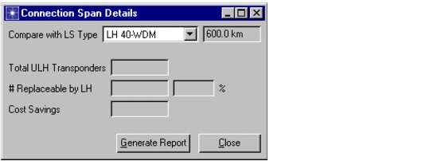
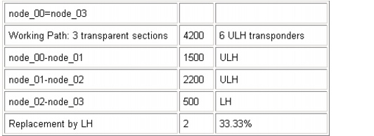

Viewing Network Information > Connection Span Details Reports for OCH Connections
Connection Span Details Reports for OCH Connections
The report provides an overview of the transparent sections of all connections routed in the optical (OCH) layer. In this context, the transparent section of a connection is the section between two regeneration points. Depending on the length of a transparent section, a different type of transponder might be used. You can use this report to assess the cost savings of deploying mixed transponders in a transparent network that uses ultra-long-haul (ULH) systems.
The report compares the currently deployed ULH transponders with the long-haul (LH) transponders of the line system that is specified in the Connection Span Details dialog box.
Note—The report is available in transparent OCH layer mode only.
To generate this report, choose Info > Export to Web Report > Connection Span Details. This opens the Connection Span Details dialog box (Figure 15-4 and Table 15-17). This dialog box shows the number of ULH transponders that can be replaced by LH transponders. You can generate a web report that shows the type of transponder used for each transparent section of every OCH connection accommodated in the network.
Figure 15-4 Connection Span Details Dialog Box

Consider the example from the web report shown in Figure 15-5, which was generated with the following assumptions:
SP Guru Transport Planner designs the network for one type of transponder—in this case the ULH transponder, thus requiring six ULH transponders (two for each transparent section). The report shows that
This means that one third (1/3) of the ULH transponders can be replaced by lower-cost LH transponders.
Figure 15-5 Connection Span Details: Example

| Home © 1987-2007 OPNET Technologies, Inc. All Rights Reserved. This software may be covered by one or more U.S. Patents. See complete patent notice in the Legal Notices section. OPNET Support Center |